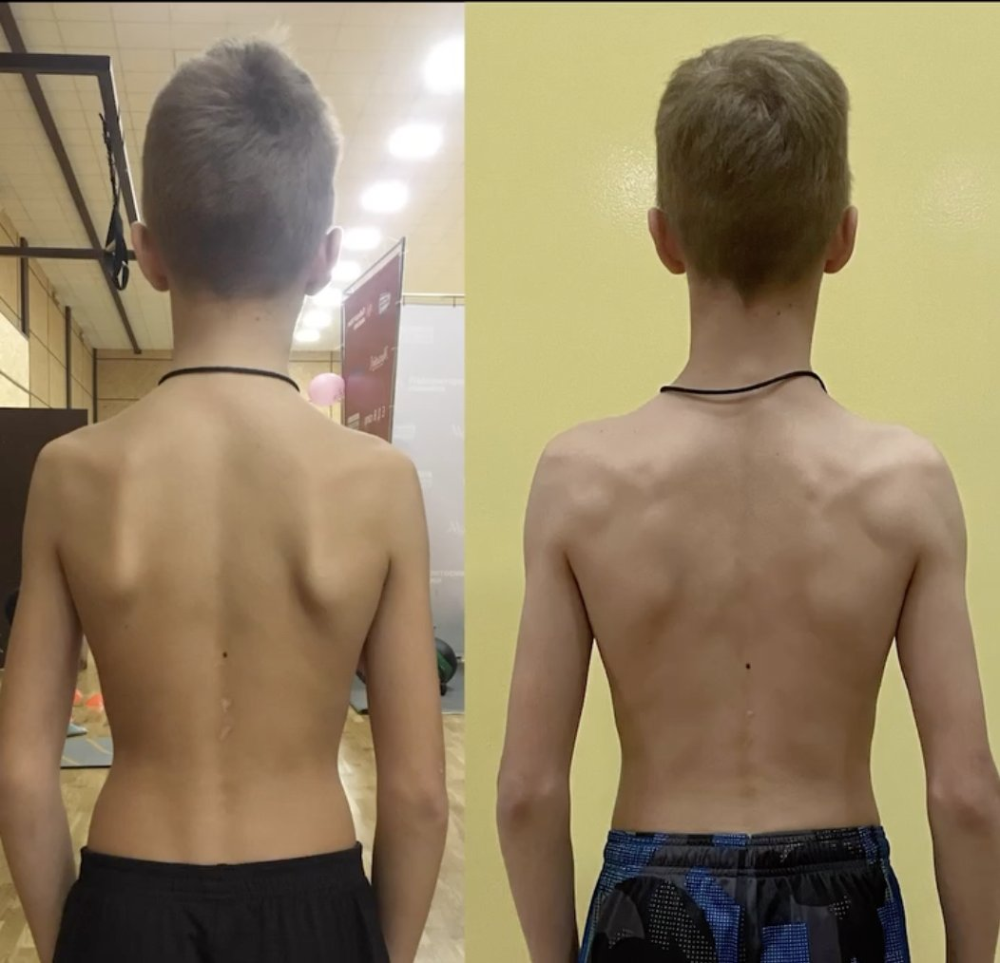
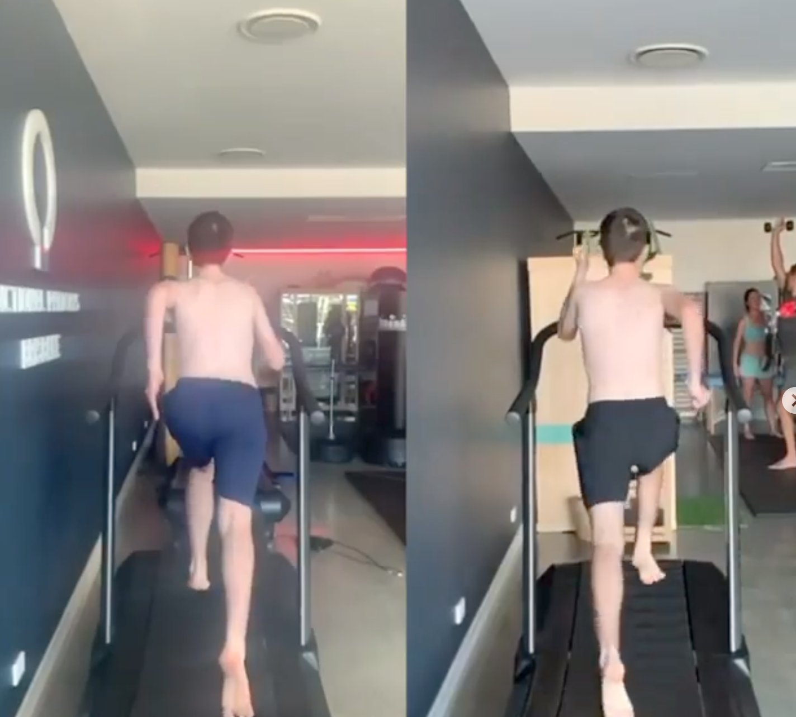
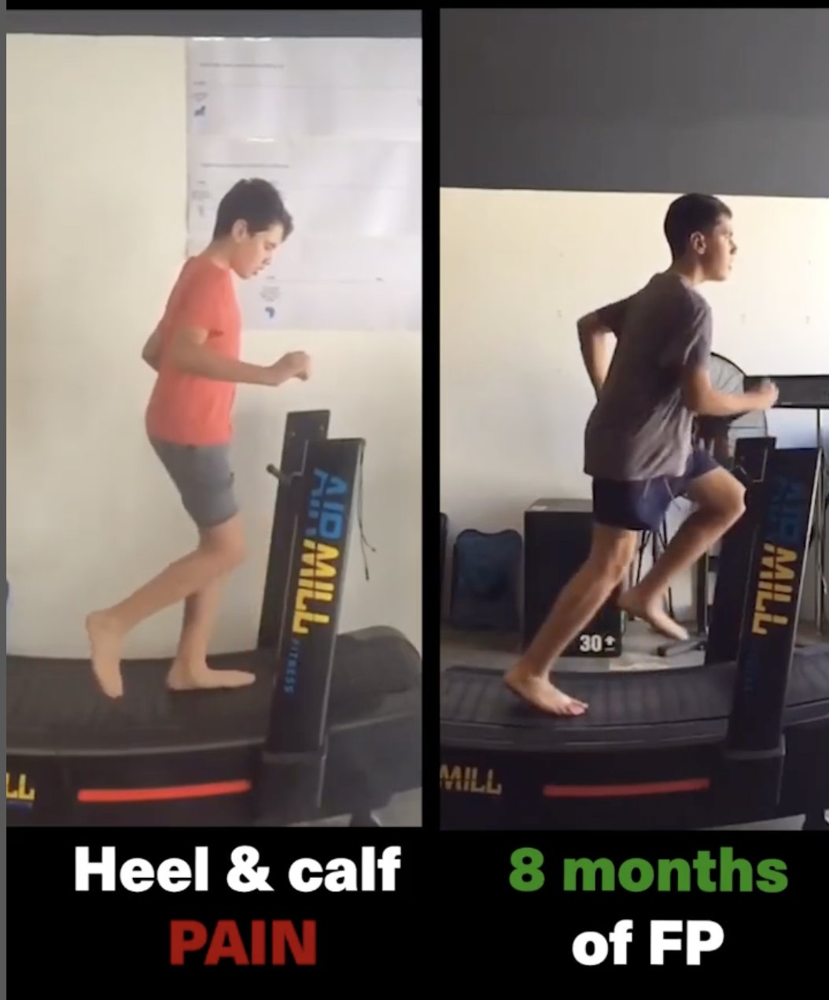
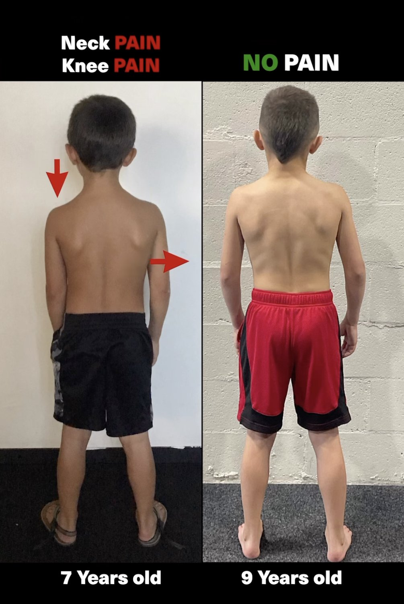
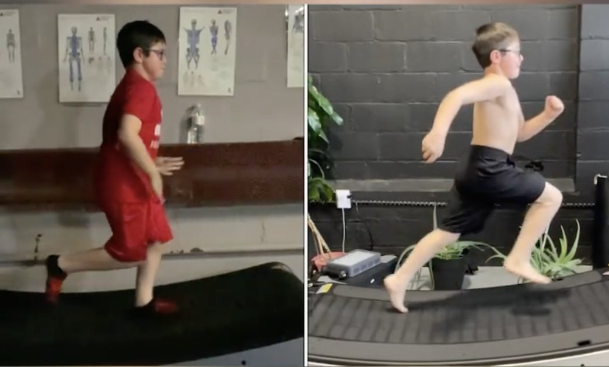

Does Your Child Exhibit Any Of The Following?
(Signs of poor gait in children and teenagers)
-
Winged Scapulas: Poor gait mechanics can contribute to winged scapulas, where the shoulder blades stick out from the back. This altered movement pattern can put strain on the shoulder girdle, potentially leading to winging.
-
Scoliosis: In cases of poor gait, the body may attempt to compensate for irregularities in movement. This compensation can contribute to the development or exacerbation of scoliosis, an abnormal curvature of the spine.
-
Lack of Coordination: An inefficient gait pattern can disrupt the natural coordination required for smooth, balanced movement. As a result, children may experience difficulties in coordinating their steps and maintaining a stable gait.
-
Flared Ribs (Rib Flare): Poor gait mechanics can affect the alignment of the torso. Over time, this misalignment may lead to flared ribs, where the ribcage protrudes outward more than usual.
-
Chronic Pain: Compensatory movements stemming from poor gait can place excessive stress on various parts of the body, leading to chronic pain. This discomfort can manifest in areas such as the feet, legs, hips, or back.

-
Toe Walking: Some children habitually walk on their toes rather than using a heel-to-toe stride. While this can be normal in very young children, it may indicate an issue if it persists beyond the age of three.
-
Pigeon-Toed or Duck Walk: If a child consistently turns their feet inward (pigeon-toed) or outward (duck walk) when walking, it may suggest a gait abnormality.
-
Frequent Tripping or Falling: Children with poor gait may struggle to maintain balance and coordination, leading to more frequent trips and falls.
-
Uneven Weight Distribution: If a child favors one leg over the other, it may indicate an underlying issue with muscle strength, joint mobility, or alignment.
-
Excessive Rotation of Hips or Shoulders: Exaggerated hip or shoulder movements while walking can be a sign of poor gait mechanics.
-
Flat Feet or High Arches: Abnormalities in foot arches can impact gait. Flat feet may lead to overpronation, while high arches can cause supination.
-
Limping or Favouring One Leg: If a child consistently avoids putting weight on one leg or has an irregular gait pattern, it may indicate an issue with that limb.
-
In-Toeing or Out-Toeing: When a child's feet point excessively inward (pigeon-toed) or outward (duck walk), it can indicate a rotational problem in the legs or feet.
-
Excessive Knee Bending (Genu Recurvatum) or Straightening (Genu Varum): Abnormalities in knee alignment, where the knees either bend excessively backward or remain too straight, can affect gait.
-
Asymmetrical Arm Swing: An uneven or limited arm swing while walking may suggest an imbalance or weakness in the upper body.
-
Stiff or Awkward Movements/Lack of Coordination: Children with poor gait may exhibit stiffness, rigidity, or awkwardness in their movements.
-
Complaints of Pain or Discomfort: Children who experience pain or discomfort while walking may be compensating for an underlying gait issue.
-
Frequent Fatigue or Tiring Easily: Children with poor gait may tire more quickly than their peers due to the increased effort required for walking.
Why Gait & Biomechanics Matter Greatly In Children & Teenagers
In a world where children are constantly on the move, ensuring their physical development and overall well-being is paramount. One powerful tool in achieving this is the Functional Patterns methodology, and a crucial component of this approach is a comprehensive gait analysis. In this blog, we'll explore the significance of gait analysis for children and how it can pave the way for a healthier, more efficient, and pain-free future.
Kids who do FP will get an education in fitness and moving well for a lifetime. Not only will they have a higher chance of moving pain free as they age but it gives them the tools to problem solve any issues that pop up along the way.
This is why we focus our training around the FP First Four: standing, walking. running & throwing. When you focus on the types of movement we do the most throughout our lives it gives you a leg up on everybody who’s still focused on building muscle on a crooked posture that doesn’t serve a purpose.
We focus on building better posture first then move to packing muscle on a solid foundation that serves the purpose of helping us walk and run. Because, at the end of the day when we’re in our 90’s all we want to be able to do is not lose muscle while being able to walk and run without the risk of falling.
Let’s set up our children for success.
Understanding Gait Analysis
Gait analysis is a systematic assessment of an individual's walking pattern, encompassing various aspects such as their interaction with gravity, joint stacking, spinal health/loading/movement and much more. This process provides invaluable insights into how a person moves and identifies any abnormalities or inefficiencies that may be affecting their biomechanics, posture and chronic pain either now or in the future.
When it comes to understanding a child's physical health and development, the importance of gait analysis cannot be overstated. Unlike static methods like X-rays or isolated testing, gait analysis provides a dynamic, comprehensive view of a child's movement patterns. The following are insights into why gait analysis stands out as a superior tool, revealing far more about a child's condition and offering precise insights for effective interventions:

Dynamic vs. Static: Capturing Real-Life Movement
Gait analysis observes how a child moves in real-time, offering a holistic view of their biomechanics. This contrasts sharply with static methods like X-rays, which provide a snapshot of the body's structure at rest. By analyzing dynamic movement, we gain a deeper understanding of how a child's body functions during activities crucial to daily life.
A Window into Functional Biomechanics
Gait analysis provides a window into the functional biomechanics of a child's body. It reveals how joints, muscles, and ligaments work together in motion, giving insights that are impossible to gather from a still image. This dynamic perspective allows for a more accurate assessment of any irregularities or inefficiencies.
Identifying Compensatory Mechanisms
Children, especially those with underlying conditions, often develop compensatory mechanisms to navigate their challenges. These subtle adjustments can go unnoticed in static examinations. Gait analysis, however, uncovers these compensations, providing critical information for tailored interventions.

Optimising Treatment Approaches
Standard, isolated testing may provide valuable information about specific aspects of a condition. However, gait analysis offers a comprehensive understanding of how different factors interact. This enables healthcare professionals to design interventions that target the root cause, rather than merely addressing symptoms.
Precision in Intervention Planning
Armed with a detailed understanding of a child's movement patterns, healthcare professionals can craft highly targeted intervention plans. Whether it's physical therapy, orthotics, or other interventions, gait analysis informs decisions with unparalleled precision.
Tracking Progress and Adjusting Interventions
As a child grows and develops, their movement patterns evolve. Gait analysis allows for ongoing monitoring, ensuring that interventions remain effective and adapting them as needed. This dynamic approach ensures that a child's treatment plan evolves with them.
Early Intervention: The Key to Long-Term Health
- Unearthing Potential Issues
Many structural and biomechanical issues can emerge during childhood. These may not manifest as immediate problems, but they can lay the groundwork for future difficulties. Gait analysis helps in identifying these issues early, allowing for timely intervention and prevention of potential complications down the line.
- Optimising Movement Patterns
Children are in a constant state of growth and development. Ensuring that their movement patterns are optimised from an early age provides a solid foundation for a lifetime of healthy, pain-free movement. Functional Patterns methodology, with its emphasis on natural, functional movement, is an excellent approach to achieving this.
- Enhancing Athletic Performance
For young athletes, the efficiency of their movement is crucial. Gait analysis can uncover areas for improvement in their biomechanics, allowing for targeted training to enhance their performance in sports and physical activities.

Addressing Specific Conditions
- Cerebral Palsy and Other Neurological Conditions
Children with conditions like cerebral palsy can benefit immensely from a gait analysis. It provides valuable data on their unique movement patterns, enabling tailored interventions to improve mobility, stability, and overall quality of life.
- Skeletal Disorders
Children with skeletal disorders such as scoliosis have unique gait patterns that require specialised attention. Gait analysis helps in understanding these patterns and devising interventions that support their specific needs. Functional Patterns therapy for scoliosis should begin as early as possible for the best and most permanent result.

A Personalised Approach to Growth
- Adaptability of Young Minds
Children's bodies are constantly changing, and their nervous systems are highly adaptable. This means that with the right interventions, they can quickly develop new, healthy movement patterns. Gait analysis provides the data needed to tailor interventions to their specific stage of development.
- Preventing Future Issues
Correcting movement patterns early can prevent a host of issues that may arise later in life, such as joint pain, muscle imbalances, and postural problems. By addressing these concerns in childhood, we lay the groundwork for a lifetime of pain-free movement.

Investing in a gait analysis for your child is a proactive step towards ensuring their long-term health and well-being. Through the Functional Patterns methodology, we have the tools to uncover potential issues, optimise movement patterns, and provide personalised interventions for your child's unique needs. By taking action now, you're setting the stage for a future filled with vitality, strength, and pain-free movement.